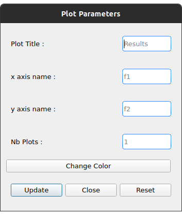
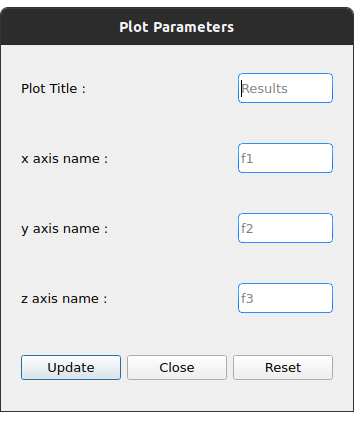

About
About EASEA
EASEA (EAsy Specification of Evolutionary Algorithms) is an Artificial Evolution platform that allows scientists with only basic skills in computer science to implement evolutionary algorithms and to exploit the massive parallelism of many-core architectures in order to optimize virtually any real-world problems (continous, discrete, combinatorial, mixed and more (with Genetic Programming)), typically allowing for speedups up to x500 on a $3,000 machine, depending on the complexity of the evaluation function of the inverse problem to be solved.
More informations here.
About this application
This application simplifies the compilation and execution process by implementing a user interface. This way it is possible to compile and run .ez programs with just a few clicks.
Dependencies
EASEA
You must install EASEA to use this application. To do this, clone the following repository and follow the README.
Plot results
To plot your results, you need to install :
-
Python (Python 3 recommended)
-
Plotly :
-
with pip :
pip install plotly==5.1.0 -
with conda :
conda install -c plotly plotly=5.1.0
-
-
Pandas :
-
with pip :
pip install pandas
-
-
Kaleido to export graphics :
-
with pip :
pip install kaleido -
with conda :
conda install -c conda-forge python-kaleido
-
-
Qt :
-
QT5 or later is recommended
-
Note that if you are using macOS, plotly only works on version 10.10 or more (OS 64 bits).
Installation
-
move to the
GUIDE/directory withcd easea/GUIDE/ -
run
sudo make install -
you can now launch the application with the
guidecommand from anywhere. -
to uninstall the application run
make uninstallfrom the directoryeasea/GUIDE/
Quick tutorials
Simple run
In this tutorial we will compile and run the file weierstrass.ez from the /examples directory of EASEA in the easiest way.
Compilation
-
In the compile tab load
easea/examples/weierstrass/weierstrass.ez -
We don’t use any options in this compilation so just click on the
Compilebutton -
After clicking on this button you see this :
Run
Go to Run tab.
We just want a simple execution of our program so we just have to click Run!.
If you want to add more options to the execution, take a look at the different menus depending on your needs.
The description of these menus is given below.
Plot results
If the run finished correctly you can now see the plot in the Result Plot tab (see more in the Result Plot tab section)
Run in batch
This application allows to run the same program several times at the same time (batch). In this tutorial we will use the file weierstrass.ez from the /examples directory of EASEA.
1) Load and compile the file in the Compile tab without any options
2) In the Run tab click on General Options and set "Batch size" to 10, then save
3) Under the General options button we can choose the number of violin plots. Set it to 5 and click Run!
4) At the end of these runs you should see something like this :
5) In the Result Plot tab you can see the graph generated as we requested : 5 violin plots (for more informations about this graph see Result Plot tab)
Interface detailed
When you open the app, you go to the first tab which allows you to compile.
The second lets you select your options and run.
The last one is dedicated to plotting the results according to the compilation and execution options.
Compile tab
① Load your file
② Choose your compilation options. The cuda and cuda_gp options appear only if you have installed CUDA SDK and nvcc (developer.nvidia.com/cuda-downloads)
③ You can add more options to get a detailed compilation
④ Run the compilation
⑤ Once you have compiled/runned your project, a Makefile with other files will be generated. To remove these files click on Make clean button (note that the .log files will not be deleted).
EASEA offers many options for compiling your .ez projects. If you want to see them in detail, check out easea commands
Run tab
You must compile your project before running it.
① Size of the batch (see Run in batch)
② Activate the island model
③ Options for running the island model. This button appear only when you activate the island model. This menu is more detailed here.
④ General options. Here you will find all the options regarding the global execution. This menu is more detailed here.
⑤ Parents options. Here you will find all the options regarding the parents settings. This menu is more detailed here.
⑥ Offsping options. Here you will find all the options regarding the offspring settings. This menu is more detailed here.
⑦ The number of plots desired. The number entered gives the number of violin plots to be traced and distribute generations in these graphs (e.g if you have a total of 100 generations and you want 10 plots you will have 10 graphs of 10 generations). This option is only available if you are not running a program with options for Multi-objective problems.
⑧ Start the runs
⑨ Stop all runs in progress
In the output window are written the commands executed and the output of the first run if you are running in batch.
General options
-
Plot Stats : Plot the graph associated with the first run
-
Generate CSV File : Save results to a CSV file
-
Print Initial Population : Print the initial population used
-
Print Final Population : Print the population at the end of the run
-
Start From File : Use a
.popfile as a starting population -
Generate R Script : Generate a R script to plot the Stats
-
Generate Plot Script : Generate a Gnuplot script to plot the Stats
-
Save Population : Save the population at the end
-
Population Size : Set the population size
-
Nb Generations : Set the number of generations
-
Time Limit : Set the time limit for each run. For no time limit, set it to 0.
-
Elite Type : Set the elite type. You can choose between Strong and Weak
-
Elite Size : Set the elite size
-
Selection Operator : Set the selection operator (Tournament by default). It is possible to choose between Tournament, Deterministic, Roulette and Random operators. Note that the Roulette operator can only be used with the "Evaluator Objective" parameter set to "maximize"
-
Selection Pressure : Set the selection pressure. This field is available only if you are using Tournament as selection operator. This value must be between 0.5 and 0.9999… inclusive or greater than 2 inclusive (default 2)
-
Reduce Final Operator : Set the final reducing operator (Tournament by default). It is possible to choose between Tournament, Deterministic, Roulette and Random operators. Note that the Roulette operator can only be used with the "Evaluator Objective" parameter set to "maximize"
-
Reduce Final Pressure : Set the final reducing pressure. This field is available only if you are using Tournament as final reduction operator. This value must be between 0.5 and 0.9999… inclusive or greater than 2 inclusive (default 2)
-
Baldwinism : Only keep fitness (default 0)
-
Number of the first GPU used for computation : …
-
Number of the first GPU NOT used for computation : …
-
Initial Population : File containing the population to use
-
Output File : Set an output file for the final population
-
Optimize Iterations : Set the number of optimisation iterations (default 100)
-
Compression : Set the compression level
-
Batch Size : Number of runs at the same time. Batch size is currently limited to 500 but it is recommended to limit to 30. Caution: run a very large number of executions may cause malfunctions depending on the capabilities of the machine
-
Nb Of Threads : Number of threads to use (default 20)
-
User parameters : Parameters to use for the program (up to 5)
Seeds
-
First seed : Value of the first seed. If this field is empty the current timestamp in secondes is the first seed
-
Seeds by run : This table allows to choose a seed for each run. You have to specify the batch size before. If a cell is empty, its run will have for seed the first incremented by the number of empty cells before (e.g first seed = 0 and we have 3 runs. If the seed for the run 2 is 42 and empty cell for the others, the seed for run 1 = 0 and the seed for run 3 = 1)
By default, most of the options are taken from the .ez file.
Note that if you run in batch only information about the first run will be displayed
Parents options
-
Surviving Parents : Set the reduction size for parent population. It is possible to set an absolute value (
#) or a percentage (%) -
Reduction Operator : Set the reduction operator (Tournament by default). It is possible to choose between Tournament, Deterministic, Roulette and Random operators. Note that the Roulette operator can only be used with the "Evaluator Objective" parameter set to "maximize"
-
Reduce Pressure : Set the reduction pressure. This field is available only if you are using Tournament as reduction operator. This value must be between 0.5 and 0.9999… inclusive or greater than 2 inclusive (default 2)
Offspring options
-
Offspring Size : Set the offspring population size
-
Surviving Offspring : Set the reduction size for offspring population. It is possible to set an absolute value (
#) or a percentage (%) -
Reduction Operator : Set the reduction operator (Tournament by default). It is possible to choose between Tournament, Deterministic, Roulette and Random operators. Note that the Roulette operator can only be used with the "Evaluator Objective" parameter set to "maximize"
-
Reduce Pressure : Set the reduction pressure. This field is available only if you are using Tournament as reduction operator. This value must be between 0.5 and 0.9999… inclusive or greater than 2 inclusive (default 2)
Island model options
This menu is available after activating the remote island model
-
Batch Type : Type of island model (local or remote)
-
Ports/machines available : Number of ports for local executions and machines for remote executions usable
-
Number of islands per run : Number of islands per run
-
IP file : File containing all the IPs of the remote islands. IP files are automatically generated in local mode
-
Migration Probability : Probability to send an individual each generation
-
Evaluate Immigrants : Evaluate Immigrants
Note that the island model execution does not produce a result plot.
See Results
When all the runs are finished, a new button appears. It allows you to see the results of the different runs. This function is available only for non multi-objective problems.
To see another run result, use the slider :
Result Plot tab
After all the runs, if there is no problem during the execution, the application will generate a graph according to your compilation options. By default, only the best execution of a batch is plotted. To plot all runs, deselect "Plot the best run only" in the update plot menu.
If you used options for Multi-objective problems you will have a 3D plot, otherwise, you will have a series of violin plots.
Violin plots
In the Run tab, before you launch the execution, you can choose the number of violin plots to trace. The number of points in each graph depend of the number of generations and the batch size.
Example :
The following example uses easea/examples/weierstrass.ez.
In this file we have 35 generations. We choose to run a batch of 10 and print 5 plots. After the execution we have 5 violin plots with 7 generations each (35 generations / 5 plots). But we had runned a batch of 10 so in each violin plot we have 7x10 = 70 points. Each point representing the best fitness for the calculated generation.
The first graph takes the 7 first generations, the second takes the next 7 etc…
The image quality is reduced to put it in the application, we recommend using the interactive version of the graph to see the details.
Violin plots interactive version
To access the interactive version of the generated plot double-click on the graph. This version allows to handle it in a browser.
To zoom on a figure, frame it. To return to the default view double-click anywhere.
In each graph there are 3 elements :
-
① The raw data
-
② The violin plot
-
③ The box plot
Here is an example of a 2D graph.
3D plot
This plot replaces the graph with the violin plots if you have compiled and run a program with the options for Multi-objective problems.
3D plot interactive version
To open the interactive version double-click on the graph.
Holding the left click rotates the figure.
Right click moves the graph on the x y axis.
You can reset the view with the toolbar at the top right.
Here is an example of a 3D graph.
Save the results graph
To save the results you can click on the appropriate button :
-
Save static plotwill save the plot as you can see it in the application. -
Save interactive plotwill save the html file that you open when you double-click the image in the app.
We recommend to save your plots from the interactive version with camera icon. This way you can save the view you want with a better quality.
Edit the results graph
 
Once you have generated the result plot you can edit it. It is possible to change :
-
The plot title
-
The axis names
-
The number of violin plots if the plot is a 2D plot
-
The plot color if it is a 2D graph
Multi-objective problems
Compilation options for multi-objective problems are :
-
nsgaii -
nsgaiii -
asrea -
ibea -
cdas
Tips
-
If the run takes a long time, set "Time limit" option to 0 to have complete execution
-
You can go to the EASEA website with the help menu. You can find a lot of useful information in this site like description of the compilation parameters
-
The usual shortcuts are available here like ctrl+tab to switch of tab, tab and shift+tab to change focus etc…
-
If you launch the executable from a terminal you can see more debug information
License
This application is under the "GNU AFFERO GENERAL PUBLIC LICENSE Version 3" license